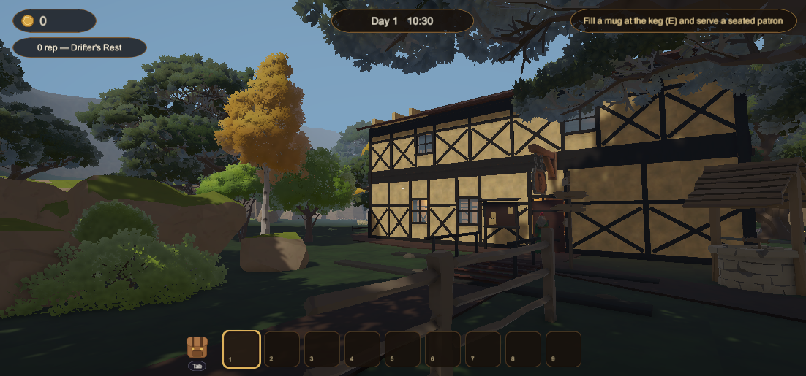
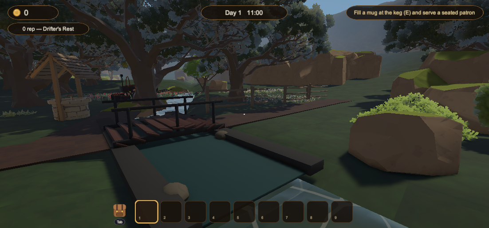
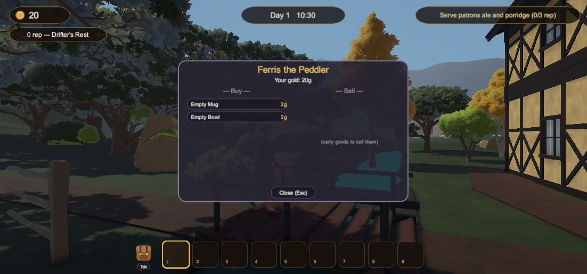
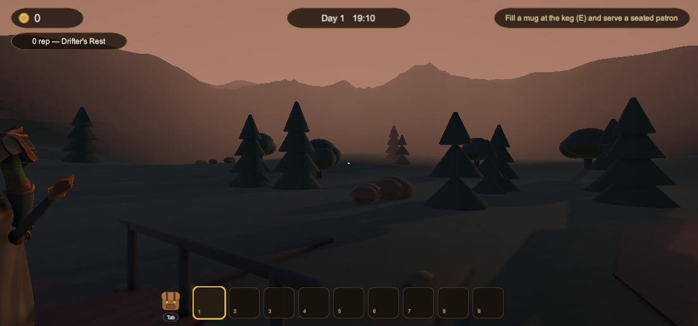

You keep the only tavern on the frontier's edge of a magical land. Pour ale, stew what the valley gives you, and build a reputation good enough that travelers trust your roof for the night — because past the creek and the mountain pass, something pale waits for a warm bowl of glowing stew.

Running water, a plank bridge, and the road to the wider world.

Buy stock, sell your goods, and hear what the roads are whispering.

Lock the door, count the coin, sleep — and greet day two.